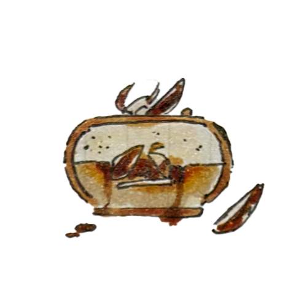

PETIT GTEAU AU CARAMEL ナッツやムース、メレンゲクッキーなど食感をたのしむことのできるキャラメルのムースケーキです。 飴をかけたナッツのカリカリとした食感、口の中で溶けるようなバニラとキャラメルの二層のムース、 メレンゲのさくさくとした食感によって小さいサイズで十分な満足感がえられるケーキになっています。 土台のコーヒー入りのジェノワーズによってコーヒーの香ばしさと苦みがキャラメルの味を引き立ててくれます。 caramel gracage vanilla mousse caramel mousse amandes confites cafe biscuit 